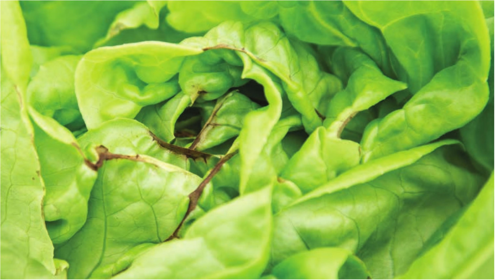

deficiency, it will relocate the nitrogen in its older leaves to its new growth. Nitrogen deficiencies can appear when crops are grown at a low EC. New aquaponic gardens will sometimes have issues with nitrogen deficiencies. Natural senescence Senescence is the natural dying of leaves due to old age. In mature plants, it is not uncommon to see some lower leaves die from natural senescence. If the hydroponic garden has both young and old plants, check to see if only the older plants are showing chlorosis on older leaves; this would indicate natural senescence. Magnesium deficiency This looks similar to a nitrogen deficiency with older leaves showing chlorosis, but a magnesium deficiency will have interveinal chlorosis with necrotic spots and/or necrotic leaf edges. Most magnesium deficiencies can be remedied with magnesium sulfate (Epsom salt) at a rate of V2 to 1 teaspoon per gallon. TIP BURN Tip burn is technically a calcium deficiency, but very often it appears even when there is calcium present in the nutrient solution. Calcium is critical for the formation of plant cell walls. The plant's calcium uptake can sometimes struggle to keep up with the formation of new cells when a plant is growing fast in an environment with intense light and warm conditions. There are several ways to remedy this issue. • Try a different variety. Some varieties are very sensitive to tip burn while others may grow fine in the existing conditions. • Increase airflow on the crop to increase transpiration and speed up calcium uptake. • Use a fertilizer with less nitrogen to slow down growth. • Give the crop less light by adding shade or moving a grow light to slow down growth. • Increase calcium. Sometimes this helps, but most hydroponic fertilizers provide sufficient calcium. Tip burn on butterhead lettuce COMMON PROBLEMS AND TROUBLESHOOTING 165
